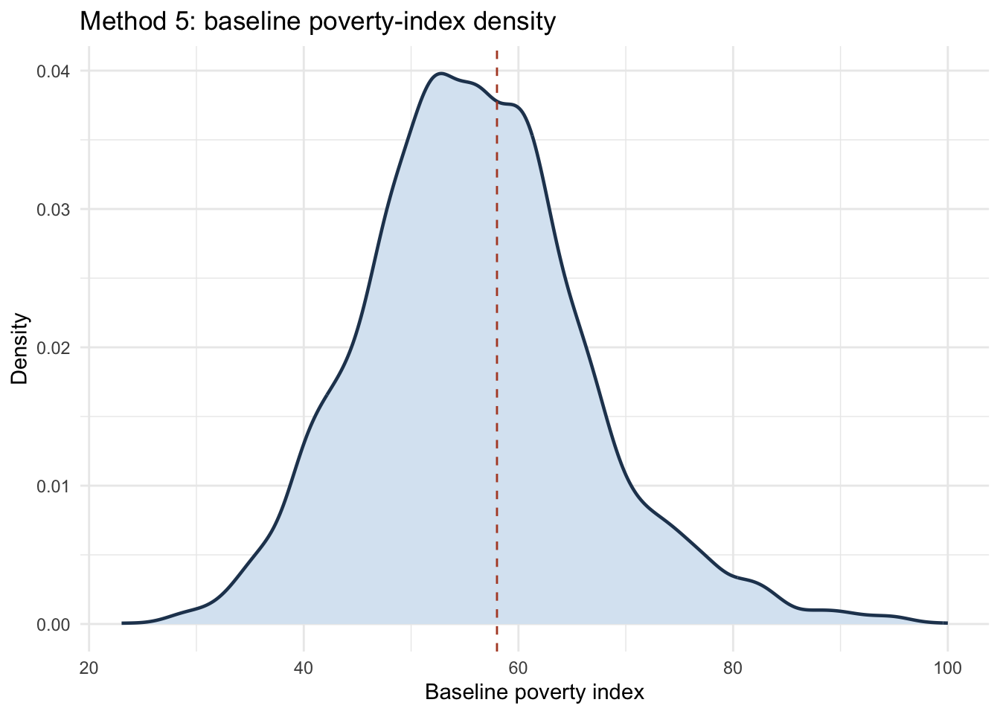
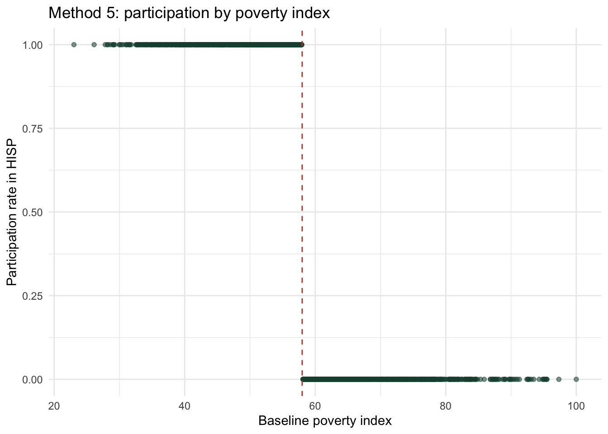
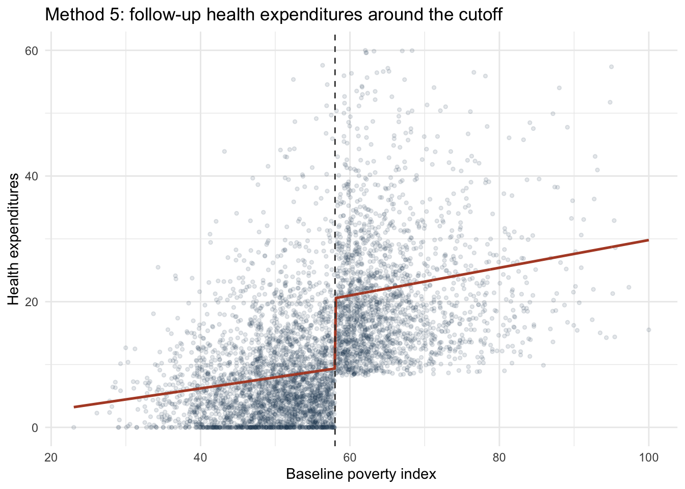
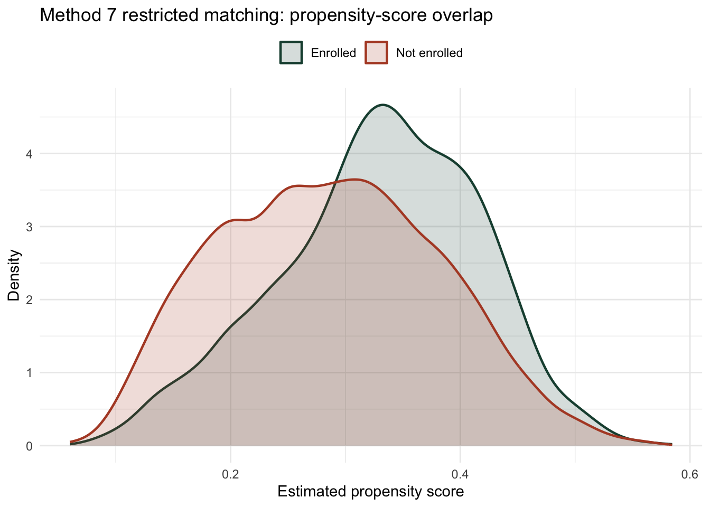
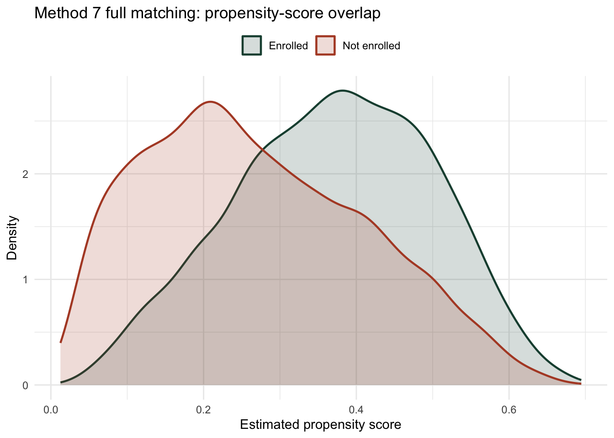

dta_file csv_file rows columns
1 evaluation.dta evaluation.csv 19827 22
2 ex1.dta ex1.csv 24 3
3 ex2.dta ex2.csv 105 2
4 rdrobust_rdhouse.dta rdrobust_rdhouse.csv 6558 2
5 rdrobust_rdsenate.dta rdrobust_rdsenate.csv 1390 2HISP IE in Practice: Evaluated Code
This page runs the evaluated HISP workflow script and shows processed outputs for each branch of the translated Stata replication.
1 Evaluated Script
# HISP IE in Practice lab: evaluated code with processed outputs.
# Run with:
# Rscript docs/labs/hisp_ie_practice_lab_evaluated_code.R
options(width = 120)
get_script_path <- function() {
for (idx in rev(seq_along(sys.frames()))) {
if (!is.null(sys.frame(idx)$ofile)) {
return(normalizePath(sys.frame(idx)$ofile))
}
}
cmd_args <- commandArgs(trailingOnly = FALSE)
file_arg <- "--file="
matches <- grep(file_arg, cmd_args)
if (length(matches) > 0) {
candidate <- sub(file_arg, "", cmd_args[matches[1]])
if (grepl("hisp_ie_practice_lab_evaluated_code[.]R$", candidate)) {
return(normalizePath(candidate))
}
}
normalizePath("docs/labs/hisp_ie_practice_lab_evaluated_code.R")
}
script_dir <- dirname(get_script_path())
source(file.path(script_dir, "hisp_ie_practice_lab_full_code.R"), local = TRUE)
message("\n[CSV export manifest]")
print(csv_export_manifest)
message("\n[Data overview]")
print(data_overview)
message("\n[Panel completeness]")
print(panel_completeness)
message("\n[Method effect summary]")
print(effect_pathway_summary)
message("\n[Method 4 first-stage terms]")
print(method_4_first_stage[method_4_first_stage$term %in% c("promotion_locality", "age_hh", "educ_hh"), ])
message("\n[Method 5 RDD coefficients]")
print(method_5_regressions[method_5_regressions$term %in% c("poverty_index", "poverty_index_left", "poverty_index_right", "eligible"), ])
message("\n[Restricted matching bootstrap]")
print(matching_restricted_bootstrap)
message("\n[Full matching bootstrap]")
print(matching_full_bootstrap)
message("\n[Matched DiD summary]")
print(matched_did_manual_summary)
message("\n[Power parameter summary]")
print(power_parameter_summary)
message("\n[Clustered power table]")
print(power_health_clustered_varying_clusters)
message("\nDone: evaluated HISP IE in Practice workflow objects created.")2 CSV Export Manifest
3 Data Overview
dataset n_rows n_cols n_households n_localities baseline_rows followup_rows
1 evaluation.csv 19827 22 9914 200 9913 9914# A tibble: 2 × 2
rounds_observed households
<int> <int>
1 1 1
2 2 9913# A tibble: 10 × 8
household_identifier locality_identifier treatment_locality promotion_locality eligible enrolled round
<dbl> <dbl> <dbl> <dbl> <dbl> <dbl> <dbl>
1 5 26 1 1 1 1 0
2 5 26 1 1 1 1 1
3 11 26 1 1 1 1 0
4 11 26 1 1 1 1 1
5 13 26 1 1 1 1 1
6 13 26 1 1 1 1 0
7 16 26 1 1 1 1 1
8 16 26 1 1 1 1 0
9 21 26 1 1 1 1 0
10 21 26 1 1 1 1 1
# ℹ 1 more variable: health_expenditures <dbl>4 Effect Summary Across The Do-File Sequence
design sample
round...1 Method 1 before-after Treatment localities, enrolled households
round...2 Method 1 before-after + controls Treatment localities, enrolled households
enrolled...3 Method 2 enrolled vs not enrolled Treatment localities at follow-up
enrolled...4 Method 2 enrolled vs not enrolled + controls Treatment localities at follow-up
treatment_locality...5 Method 3 randomized assignment Eligible households at follow-up
treatment_locality...6 Method 3 randomized assignment + controls Eligible households at follow-up
enrolled_rp...7 Method 4 IV All households at follow-up
enrolled_rp...8 Method 4 IV + controls All households at follow-up
...9 Method 5 RDD Treatment localities at follow-up
...10 Method 5 RDD + controls Treatment localities at follow-up
enrolled_round...11 Method 6 difference-in-differences Treatment localities, both rounds
enrolled_round...12 Method 6 difference-in-differences + controls Treatment localities, both rounds
...13 Method 7 restricted matching Wide household file
...14 Method 7 full matching Wide household file
...15 Method 7 matched difference-in-differences Matched full-set sample
term estimate std.error statistic p.value conf.low conf.high df
round...1 round -6.649515 0.2287324 -29.071156 1.107981e-49 -7.103486 -6.195545 97
round...2 round -6.710642 0.2299246 -29.186272 7.851577e-50 -7.166979 -6.254305 97
enrolled...3 enrolled -14.464732 0.3289480 -43.972696 8.892860e-67 -15.117436 -13.812027 99
enrolled...4 enrolled -9.982211 0.2936766 -33.990483 2.151169e-56 -10.564929 -9.399493 99
treatment_locality...5 treatment_locality -10.140371 0.3956824 -25.627551 1.701426e-64 -10.920713 -9.360030 196
treatment_locality...6 treatment_locality -10.010316 0.3412294 -29.336026 1.250466e-73 -10.683269 -9.337363 196
enrolled_rp...7 enrolled_rp -9.499769 1.1328423 -8.385782 9.153421e-15 -11.733685 -7.265853 199
enrolled_rp...8 enrolled_rp -9.740895 0.9366342 -10.399893 1.652501e-20 -11.587897 -7.893893 199
...9 eligible -11.191713 0.4661828 -24.007136 1.417119e-120 -12.105637 -10.277788 4956
...10 eligible -9.028904 0.4305255 -20.971824 1.269762e-93 -9.872925 -8.184883 4945
enrolled_round...11 enrolled_round -8.162931 0.3191368 -25.578161 2.035401e-45 -8.796168 -7.529695 99
enrolled_round...12 enrolled_round -8.161499 0.3197482 -25.524766 2.436590e-45 -8.795949 -7.527049 99
...13 enrolled -11.941928 0.2333532 -51.175338 0.000000e+00 -12.399385 -11.484470 5926
...14 enrolled -9.865696 0.2066186 -47.748339 0.000000e+00 -10.270743 -9.460648 5926
...15 enrolled -9.340869 0.1889768 -49.428658 0.000000e+00 -9.711332 -8.970405 5926
n_obs n_clusters
round...1 5929 98
round...2 5929 98
enrolled...3 4960 100
enrolled...4 4960 100
treatment_locality...5 5629 197
treatment_locality...6 5629 197
enrolled_rp...7 9914 200
enrolled_rp...8 9914 200
...9 4960 NA
...10 4960 NA
enrolled_round...11 9919 100
enrolled_round...12 9919 100
...13 5928 NA
...14 5928 NA
...15 5928 NA5 Mean-Comparison Checks
sample outcome group_var group0_n group1_n group0_mean
1 Method 1: treatment localities, enrolled households health_expenditures round 2964 2965 14.48969
group1_mean diff_group0_minus_group1 statistic p.value conf.low conf.high
1 7.840179 6.649515 39.76456 9.905571e-307 6.321699 6.977331 sample outcome group_var group0_n group1_n group0_mean group1_mean
1 Method 2: treatment localities at follow-up health_expenditures enrolled 1995 2965 22.30491 7.840179
diff_group0_minus_group1 statistic p.value conf.low conf.high
1 14.46473 49.0835 0 13.887 15.04247 sample outcome group_var group0_n group1_n group0_mean group1_mean
1 Method 3: baseline outcome health_expenditures treatment_locality 2664 2964 14.57385 14.489694
2 Method 3: follow-up outcome health_expenditures treatment_locality 2664 2965 17.98055 7.840179
diff_group0_minus_group1 statistic p.value conf.low conf.high
1 0.08415278 0.7328412 0.4636858 -0.140960 0.3092655
2 10.14037115 49.1510077 0.0000000 9.735923 10.5448194 sample outcome group_var group0_n group1_n group0_mean group1_mean
1 Method 6: nonenrolled households health_expenditures round 1995 1995 20.79149 22.304911
2 Method 6: enrolled households health_expenditures round 2964 2965 14.48969 7.840179
diff_group0_minus_group1 statistic p.value conf.low conf.high
1 -1.513416 -4.928342 8.629936e-07 -2.115473 -0.9113594
2 6.649515 39.764562 9.905571e-307 6.321699 6.97733146 Randomized-Assignment Baseline Balance
sample outcome group_var group0_n group1_n group0_mean
1 Method 3: baseline balance on controls age_hh treatment_locality 2664 2964 42.29204204
2 Method 3: baseline balance on controls age_sp treatment_locality 2664 2964 36.87500000
3 Method 3: baseline balance on controls educ_hh treatment_locality 2664 2964 2.81038269
4 Method 3: baseline balance on controls educ_sp treatment_locality 2664 2964 2.67436186
5 Method 3: baseline balance on controls female_hh treatment_locality 2664 2964 0.07732733
6 Method 3: baseline balance on controls indigenous treatment_locality 2664 2964 0.42004505
7 Method 3: baseline balance on controls hhsize treatment_locality 2664 2964 5.71021021
8 Method 3: baseline balance on controls dirtfloor treatment_locality 2664 2964 0.73460961
9 Method 3: baseline balance on controls bathroom treatment_locality 2664 2964 0.55855856
10 Method 3: baseline balance on controls land treatment_locality 2664 2964 1.71734234
11 Method 3: baseline balance on controls hospital_distance treatment_locality 2664 2964 106.29554907
group1_mean diff_group0_minus_group1 statistic p.value conf.low conf.high
1 41.65657957 0.635462475 1.6948426 0.09016063 -0.099562473 1.37048742
2 36.83636977 0.038630229 0.1238240 0.90145907 -0.572964981 0.65022544
3 2.97118033 -0.160797635 -2.3019635 0.02137358 -0.297735246 -0.02386002
4 2.70327260 -0.028910743 -0.4321104 0.66567774 -0.160072148 0.10225066
5 0.07321188 0.004115451 0.5845965 0.55884251 -0.009685303 0.01791621
6 0.42914980 -0.009104753 -0.6898131 0.49034017 -0.034979626 0.01677012
7 5.76990553 -0.059695323 -1.1248286 0.26070967 -0.163734162 0.04434352
8 0.72165992 0.012949691 1.0896874 0.27589753 -0.010347255 0.03624664
9 0.57354926 -0.014990699 -1.1329831 0.25726963 -0.040928908 0.01094751
10 1.67712551 0.040216836 0.5706950 0.56822922 -0.097931414 0.17836509
11 109.20431218 -2.908763111 -2.5722003 0.01013087 -5.125658024 -0.691868207 Instrumental-Variables Branch
sample outcome group_var group0_n
1 Method 4: baseline health expenditures by promotion locality health_expenditures promotion_locality 4831
2 Method 4: follow-up health expenditures by promotion locality health_expenditures promotion_locality 4831
3 Method 4: follow-up enrollment by promotion locality enrolled_rp promotion_locality 4831
group1_n group0_mean group1_mean diff_group0_minus_group1 statistic p.value conf.low conf.high
1 5082 17.23795029 17.1853516 0.05259868 0.468411 6.395010e-01 -0.167516 0.2727133
2 5083 18.84538057 14.9715201 3.87386049 16.433002 6.851948e-60 3.411769 4.3359522
3 5083 0.08424757 0.4920323 -0.40778470 -49.845803 0.000000e+00 -0.423821 -0.3917484 model sample term estimate
(Intercept)...1 Method 4 first stage: no controls All households at follow-up (Intercept) 0.0842475678
promotion_locality...2 Method 4 first stage: no controls All households at follow-up promotion_locality 0.4077846966
(Intercept)...3 Method 4 first stage: with controls All households at follow-up (Intercept) 0.0413198219
promotion_locality...4 Method 4 first stage: with controls All households at follow-up promotion_locality 0.4077176520
age_hh Method 4 first stage: with controls All households at follow-up age_hh -0.0036313938
age_sp Method 4 first stage: with controls All households at follow-up age_sp -0.0017084755
educ_hh Method 4 first stage: with controls All households at follow-up educ_hh -0.0047584381
educ_sp Method 4 first stage: with controls All households at follow-up educ_sp -0.0013447635
female_hh Method 4 first stage: with controls All households at follow-up female_hh -0.0009629409
indigenous Method 4 first stage: with controls All households at follow-up indigenous 0.0909957006
hhsize Method 4 first stage: with controls All households at follow-up hhsize 0.0358152771
dirtfloor Method 4 first stage: with controls All households at follow-up dirtfloor 0.1032884840
bathroom Method 4 first stage: with controls All households at follow-up bathroom -0.0092235158
land Method 4 first stage: with controls All households at follow-up land -0.0052628135
hospital_distance Method 4 first stage: with controls All households at follow-up hospital_distance 0.0003612214
std.error statistic p.value conf.low conf.high df n_obs n_clusters
(Intercept)...1 0.0242537604 3.47358787 6.300878e-04 0.0364202063 0.1320749293 199 9914 200
promotion_locality...2 0.0358659746 11.36968120 2.098905e-23 0.3370585534 0.4785108399 199 9914 200
(Intercept)...3 0.0565501735 0.73067542 4.658368e-01 -0.0701946628 0.1528343066 199 9914 200
promotion_locality...4 0.0331141616 12.31248602 2.875158e-26 0.3424179643 0.4730173397 199 9914 200
age_hh 0.0006522142 -5.56779302 8.282007e-08 -0.0049175319 -0.0023452557 199 9914 200
age_sp 0.0006980445 -2.44751655 1.525157e-02 -0.0030849890 -0.0003319621 199 9914 200
educ_hh 0.0028135072 -1.69128343 9.234812e-02 -0.0103065520 0.0007896758 199 9914 200
educ_sp 0.0027743216 -0.48471796 6.284095e-01 -0.0068156050 0.0041260781 199 9914 200
female_hh 0.0159675948 -0.06030594 9.519725e-01 -0.0324503440 0.0305244622 199 9914 200
indigenous 0.0317417667 2.86674971 4.593402e-03 0.0284023160 0.1535890852 199 9914 200
hhsize 0.0046017088 7.78303859 3.782077e-13 0.0267409073 0.0448896469 199 9914 200
dirtfloor 0.0201760254 5.11936727 7.206948e-07 0.0635022387 0.1430747293 199 9914 200
bathroom 0.0197402577 -0.46724394 6.408366e-01 -0.0481504461 0.0297034145 199 9914 200
land 0.0020862640 -2.52260187 1.243184e-02 -0.0093768355 -0.0011487915 199 9914 200
hospital_distance 0.0003034082 1.19054573 2.352502e-01 -0.0002370865 0.0009595293 199 9914 200 model sample term estimate
(Intercept)...1 Method 4 second stage: no controls All households at follow-up (Intercept) 19.645713019
enrolled_rp...2 Method 4 second stage: no controls All households at follow-up enrolled_rp -9.499769179
(Intercept)...3 Method 4 second stage: with controls All households at follow-up (Intercept) 29.168356637
enrolled_rp...4 Method 4 second stage: with controls All households at follow-up enrolled_rp -9.740895349
age_hh Method 4 second stage: with controls All households at follow-up age_hh 0.074076065
age_sp Method 4 second stage: with controls All households at follow-up age_sp -0.013212493
educ_hh Method 4 second stage: with controls All households at follow-up educ_hh 0.039830665
educ_sp Method 4 second stage: with controls All households at follow-up educ_sp -0.045409206
female_hh Method 4 second stage: with controls All households at follow-up female_hh 1.032187988
indigenous Method 4 second stage: with controls All households at follow-up indigenous -2.340651907
hhsize Method 4 second stage: with controls All households at follow-up hhsize -2.040762070
dirtfloor Method 4 second stage: with controls All households at follow-up dirtfloor -2.094914920
bathroom Method 4 second stage: with controls All households at follow-up bathroom 0.686548349
land Method 4 second stage: with controls All households at follow-up land 0.096067443
hospital_distance Method 4 second stage: with controls All households at follow-up hospital_distance -0.004406172
std.error statistic p.value conf.low conf.high df n_obs n_clusters
(Intercept)...1 0.466312900 42.1298939 4.219084e-101 18.726164244 20.565261795 199 9914 200
enrolled_rp...2 1.132842312 -8.3857825 9.153421e-15 -11.733684989 -7.265853369 199 9914 200
(Intercept)...3 0.838097114 34.8030749 1.463659e-86 27.515665547 30.821047726 199 9914 200
enrolled_rp...4 0.936634206 -10.3998928 1.652501e-20 -11.587897301 -7.893893398 199 9914 200
age_hh 0.014423918 5.1356409 6.677479e-07 0.045632725 0.102519405 199 9914 200
age_sp 0.017054609 -0.7747168 4.394265e-01 -0.046843441 0.020418455 199 9914 200
educ_hh 0.043520790 0.9152101 3.611890e-01 -0.045990442 0.125651772 199 9914 200
educ_sp 0.048291735 -0.9403101 3.481985e-01 -0.140638409 0.049819997 199 9914 200
female_hh 0.453175660 2.2776775 2.380860e-02 0.138545279 1.925830697 199 9914 200
indigenous 0.386645313 -6.0537444 6.929619e-09 -3.103099663 -1.578204152 199 9914 200
hhsize 0.066953623 -30.4802334 6.653761e-77 -2.172791706 -1.908732434 199 9914 200
dirtfloor 0.270488774 -7.7449237 4.763658e-13 -2.628307028 -1.561522813 199 9914 200
bathroom 0.239643448 2.8648743 4.619591e-03 0.213981884 1.159114814 199 9914 200
land 0.045206143 2.1250971 3.481201e-02 0.006922894 0.185211992 199 9914 200
hospital_distance 0.004582354 -0.9615520 3.374416e-01 -0.013442375 0.004630031 199 9914 2008 Regression-Discontinuity Branch
# A tibble: 21 × 12
model sample term estimate std.error statistic p.value conf.low conf.high df n_obs n_clusters
<chr> <chr> <chr> <dbl> <dbl> <dbl> <dbl> <dbl> <dbl> <int> <int> <int>
1 Method 5: baseline hea… Treat… (Int… 0.127 0.357 0.357 7.21e- 1 -0.571 0.826 4957 4959 NA
2 Method 5: baseline hea… Treat… pove… 0.302 0.00626 48.2 0 0.289 0.314 4957 4959 NA
3 Method 5: RDD without … Treat… (Int… 20.6 0.338 60.9 0 19.9 21.2 4956 4960 NA
4 Method 5: RDD without … Treat… pove… 0.176 0.0303 5.80 7.12e- 9 0.116 0.235 4956 4960 NA
5 Method 5: RDD without … Treat… pove… 0.220 0.0316 6.98 3.37e- 12 0.158 0.282 4956 4960 NA
6 Method 5: RDD without … Treat… elig… -11.2 0.466 -24.0 1.42e-120 -12.1 -10.3 4956 4960 NA
7 Method 5: RDD with con… Treat… (Int… 29.2 0.920 31.8 1.31e-201 27.4 31.0 4945 4960 NA
8 Method 5: RDD with con… Treat… elig… -9.03 0.431 -21.0 1.27e- 93 -9.87 -8.18 4945 4960 NA
9 Method 5: RDD with con… Treat… pove… -0.0270 0.0286 -0.945 3.45e- 1 -0.0831 0.0290 4945 4960 NA
10 Method 5: RDD with con… Treat… pove… 0.171 0.0299 5.71 1.19e- 8 0.112 0.230 4945 4960 NA
# ℹ 11 more rows


9 Matching Branch
wide_rows enrolled_households not_enrolled_households
1 9914 2965 6949 group support_label n
1 Not enrolled Outside matched support 3985
2 Not enrolled Matched support 2964
3 Enrolled Matched support 2964# A tibble: 1 × 12
model sample term estimate std.error statistic p.value conf.low conf.high df n_obs n_clusters
<chr> <chr> <chr> <dbl> <dbl> <dbl> <dbl> <dbl> <dbl> <int> <int> <int>
1 Method 7 restricted match… Wide … enro… -11.9 0.233 -51.2 0 -12.4 -11.5 5926 5928 NA design bootstrap_reps valid_reps att_original bootstrap_mean bootstrap_se
1 Method 7 restricted matching 50 50 -11.94193 -11.90134 0.2316616 group support_label n
1 Not enrolled Outside matched support 3985
2 Not enrolled Matched support 2964
3 Enrolled Matched support 2964# A tibble: 1 × 12
model sample term estimate std.error statistic p.value conf.low conf.high df n_obs n_clusters
<chr> <chr> <chr> <dbl> <dbl> <dbl> <dbl> <dbl> <dbl> <int> <int> <int>
1 Method 7 full matching: w… Wide … enro… -9.87 0.207 -47.7 0 -10.3 -9.46 5926 5928 NA design bootstrap_reps valid_reps att_original bootstrap_mean bootstrap_se
1 Method 7 full matching 50 50 -9.865696 -9.984527 0.1800299# A tibble: 1 × 6
matched_pairs mean_matched_dd sd_matched_dd min_matched_dd median_matched_dd max_matched_dd
<int> <dbl> <dbl> <dbl> <dbl> <dbl>
1 2964 -9.34 10.1 -67.7 -9.50 67.7# A tibble: 1 × 12
model sample term estimate std.error statistic p.value conf.low conf.high df n_obs n_clusters
<chr> <chr> <chr> <dbl> <dbl> <dbl> <dbl> <dbl> <dbl> <int> <int> <int>
1 Method 7 matched differen… Match… enro… -9.34 0.189 -49.4 0 -9.71 -8.97 5926 5928 NA

10 Power Calculations
outcome sample mean sd rho
1 health_expenditures Baseline eligible households 14.52952766 4.3010043 6.343689e-02
2 hospital Baseline eligible households 0.05401564 0.2260686 2.588890e-08
3 health_expenditures Follow-up treated eligible households 7.84017904 7.9944955 4.022873e-02
4 hospital Follow-up treated eligible households 0.04856661 0.2149965 3.109193e-09 outcome power minimum_detectable_effect target_mean n_per_arm total_n
1 Health expenditures 0.9 1 6.840179 1344 2688
2 Health expenditures 0.9 2 5.840179 336 672
3 Health expenditures 0.9 3 4.840179 150 300 outcome power minimum_detectable_effect target_mean n_per_arm total_n
1 Health expenditures 0.8 1 6.840179 1004 2008
2 Health expenditures 0.8 2 5.840179 251 502
3 Health expenditures 0.8 3 4.840179 112 224 outcome power minimum_detectable_effect target_mean n_per_arm total_n
1 Hospitalization rate 0.8 0.01 0.05856661 7257 14514
2 Hospitalization rate 0.8 0.02 0.06856661 1815 3630
3 Hospitalization rate 0.8 0.03 0.07856661 807 1614# A tibble: 3 × 12
outcome power minimum_detectable_eff…¹ target_mean n_per_arm total_n rho num_clusters total_n_clustered
<chr> <dbl> <dbl> <dbl> <dbl> <dbl> <dbl> <dbl> <dbl>
1 Health expenditures 0.8 1 6.84 1004 2008 0.0402 100 10027
2 Health expenditures 0.8 2 5.84 251 502 0.0402 100 604
3 Health expenditures 0.8 3 4.84 112 224 0.0402 100 237
# ℹ abbreviated name: ¹minimum_detectable_effect
# ℹ 3 more variables: n_per_arm_clustered <dbl>, avg_cluster_size <dbl>, design_effect <dbl># A tibble: 5 × 12
outcome power minimum_detectable_eff…¹ target_mean n_per_arm total_n rho num_clusters total_n_clustered
<chr> <dbl> <dbl> <dbl> <dbl> <dbl> <dbl> <dbl> <dbl>
1 Health expenditures 0.8 2 5.84 251 502 0.0402 30 1475
2 Health expenditures 0.8 2 5.84 251 502 0.0402 58 740
3 Health expenditures 0.8 2 5.84 251 502 0.0402 81 642
4 Health expenditures 0.8 2 5.84 251 502 0.0402 90 622
5 Health expenditures 0.8 2 5.84 251 502 0.0402 120 580
# ℹ abbreviated name: ¹minimum_detectable_effect
# ℹ 3 more variables: n_per_arm_clustered <dbl>, avg_cluster_size <dbl>, design_effect <dbl>